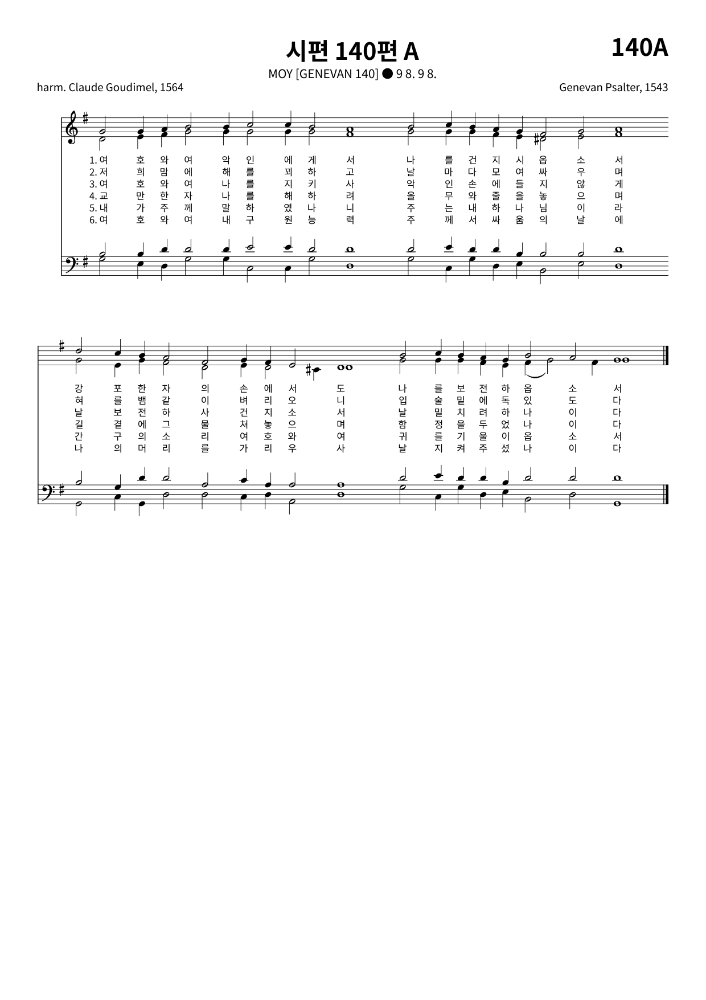

Psalm 140A
MOY [GENEVAN 140] · 9 8. 9 8.
English title: LORD, Rescue Me from Foes, I Pray Thee
Tune: Genevan Psalter, 1543 · Harmony: Claude Goudimel, 1564 · Lyrics: Korean adaptation of Psalm 140 from the Korean Revised Version (AI draft adaptation · not yet theologically reviewed) · 6 stanzas
Psalm 140 is divided into 2 tunes: A B · This tune contains stanzas 1–6 of the Psalm 140 lyrics.
Score PDF MusicXML (for printing) MusicXML (for accompaniment, with prelude and repeats) Read Psalm 140 (Korean Revised Version)
Score
← Psalm 139B ListAccompaniment (in preparation)Psalm 140B →
Lyrics (Korean)
Stanza 1
여호와여 악인에게서
나를 건지시옵소서
강포한 자의 손에서도
나를 보전하옵소서
여호와여 악인에게서
나를 건지시옵소서
강포한 자의 손에서도
나를 보전하옵소서
Stanza 2
저희 맘에 해를 꾀하고
날마다 모여 싸우며
혀를 뱀 같이 벼리오니
입술 밑에 독 있도다
저희 맘에 해를 꾀하고
날마다 모여 싸우며
혀를 뱀 같이 벼리오니
입술 밑에 독 있도다
Stanza 3
여호와여 나를 지키사
악인 손에 들지 않게
날 보전하사 건지소서
날 밀치려 하나이다
여호와여 나를 지키사
악인 손에 들지 않게
날 보전하사 건지소서
날 밀치려 하나이다
Stanza 4
교만한 자 나를 해하려
올무와 줄을 놓으며
길 곁에 그물 쳐 놓으며
함정을 두었나이다
교만한 자 나를 해하려
올무와 줄을 놓으며
길 곁에 그물 쳐 놓으며
함정을 두었나이다
Stanza 5
내가 주께 말하였나니
주는 내 하나님이라
간구의 소리 여호와여
귀를 기울이옵소서
내가 주께 말하였나니
주는 내 하나님이라
간구의 소리 여호와여
귀를 기울이옵소서
Stanza 6
여호와여 내 구원 능력
주께서 싸움의 날에
나의 머리를 가리우사
날 지켜 주셨나이다
여호와여 내 구원 능력
주께서 싸움의 날에
나의 머리를 가리우사
날 지켜 주셨나이다